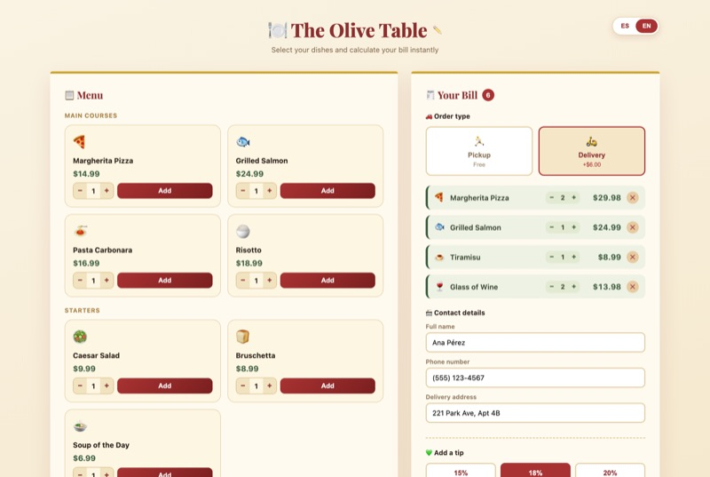
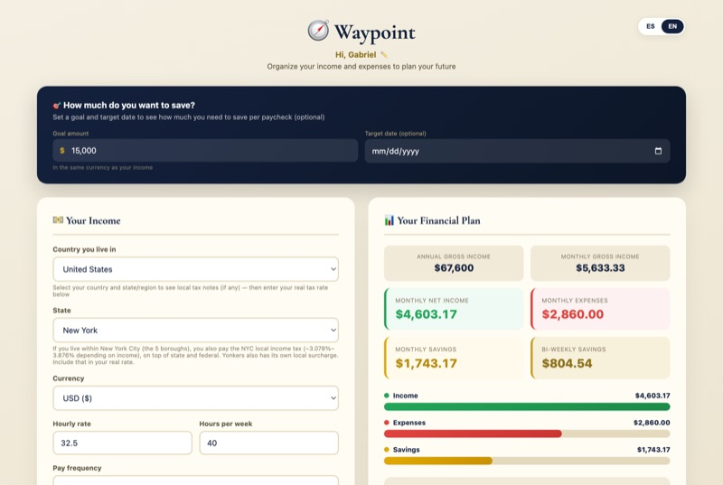
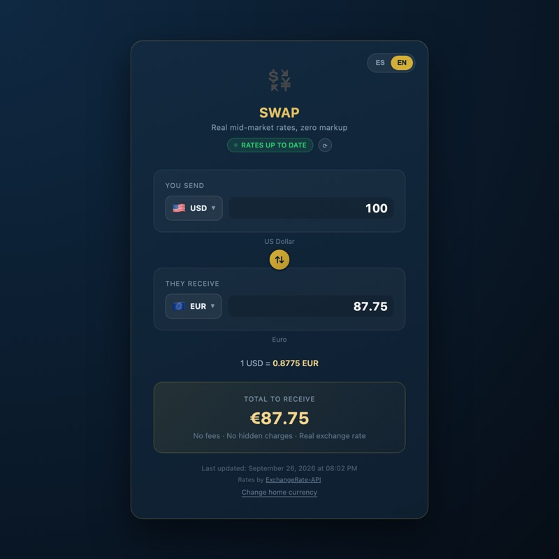
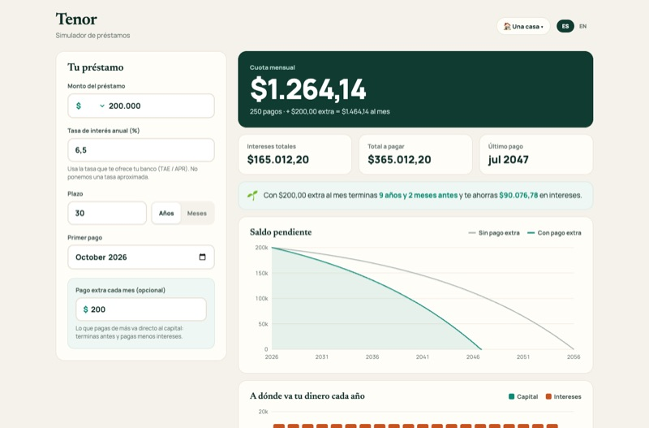
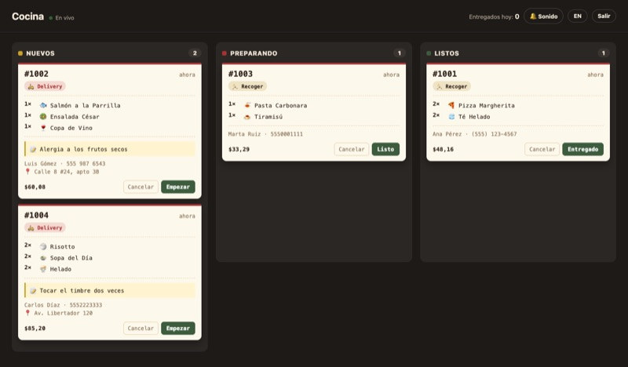

🍽️
Apron
Página de pedidos para restaurantes: menú, carrito, recoger o delivery, propina, impuesto local real y confirmación del pedido.
Hago páginas y herramientas web que funcionan de verdad, el backend en Python que las respalda, y juegos para demostrar que la lógica también importa. Las demos se prueban ahora mismo, sin instalar nada.
HTML, CSS y JavaScript puros · sin frameworks

Página de pedidos para restaurantes: menú, carrito, recoger o delivery, propina, impuesto local real y confirmación del pedido.

Planificador de finanzas personales: ingresos, impuestos y gastos para ver cuánto ahorras por pago y cuándo llegas a tu meta.

Conversor de 88 monedas con tasas reales del mercado. Funciona sin conexión con las últimas tasas descargadas y nunca inventa una.

Simulador de préstamos: cuota, intereses, tabla de amortización y cuánto ahorras con pagos extra. Gráficos interactivos y exportación a CSV.
Python · FastAPI · SQLite · API REST con pruebas

El servidor de Apron. Recibe los pedidos, recalcula los precios en el servidor para que nadie los altere, los guarda en una base de datos y los muestra en un tablero de cocina en vivo, protegido con contraseña.
Escritos en Python con pygame · versión web para jugar aquí mismo
Cada proyecto tiene su propia identidad: colores, tipografía y una bienvenida pensada para su público. Nada de plantillas genéricas.
Me importan los detalles que no se ven hasta que faltan: que 1000 se escriba 1.000, que el idioma se recuerde, que funcione en el teléfono y que un dato nunca sea inventado.